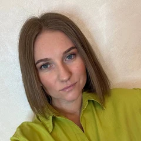

Как психологу за 3 месяца выйти на новый уровень дохода, привлекать клиентов премиум сегмента и войти в 1% тех, кто обладает уникальными навыками и знаниями
Интегративный метод Анны Саба, состояние и мышление специалиста, работающего с премиум сегментом

основатель Института психического здоровья
Напишите, какие мои программы вы проходили
Пишите в чате активно
Кто ведёт практику?
Какой доход от практики у вас сейчас?
Кто хотел бы поднять чек и удвоить доход без переработки?
Пишите «Я» в чат
Анна Таскалиевна Саба
Врач-психиатр, психотерапевт. Основатель Института психического здоровья доктора Анны Саба.
лет практики
клиентов
специалистов обучила
Сеченовский университет · НМИЦ им. В.П. Сербского · РУДН
Что разберём за этот вечер
Как соединять EMDR 3.0, системную терапию и квантовую психологию в одной сессии
Как поднять чек на свои консультации
Где искать VIP-клиентов и как их вести, чтобы они рекомендовали вас
Как говорить о себе, чтобы к вам шли VIP-клиенты
Как создать свой авторский метод и упаковать его в продукт
Как собирать свою групповую работу на примере нашей мастер-группы
Реальное распределение денег
В кризис платежеспособных клиентов становится больше
Кредиты и сокращения бьют по тем слоям населения, кто живет от зарплаты до зарплаты. Рискуют потерять практику только те психологи, кто работает с низкими чеками.
Почему работа с VIP-клиентами – лучший путь для психолога?
Два риелтора, одна и та же работа, но разный доход
Продаёт квартиру за 5 млн ₽
Продаёт пентхаус за 1 млрд ₽
Время то же, процент тот же. Разница только в чеке.
У психологов то же самое. В чём разница?
Разница в трёх вещах
состояниеМышление VIP
Когда сходятся все три, вы работаете с VIP-клиентами на равных
Это лучший путь развития для психолога
Сильный клиент задаёт высокую планку и вам
Меньше часов, больше дохода, есть время на жизнь
Короткие ясные разговоры с людьми, которые знают, чего хотят
Спортсмен мирового уровня держит тренера, повара и психолога. Чем больше у человека денег, тем больше он вкладывает в себя.
Платёжеспособные клиенты есть в любой экономике: это 10–15% людей
У них есть капитал, стратегия и привычка вкладываться в себя. Они всегда покупают качество и глубину
VIP-клиенты есть всегда. Вопрос в том, умеете ли вы с ними работать
Этим знаниям в вузе не учат
Откуда им взяться? Знания получают у того, кто уже прошёл этот путь. Это самый быстрый способ вырасти.
Я сама прошла этот путь
стоила моя индивидуальная работа, когда я закрыла личную практику
клиентов за 10+ лет практики
назад я открыла институт, и рост пошёл на другом уровне
Психологи, которые подняли доход

Было: практикующий психолог, упёрлась в финансовый потолок
Стало: доход вырос в 2,5 раза, запись заполнена на месяц вперёд
Было: декрет, развод, дохода нет
Стало: через 2 месяца 100 000 ₽/мес, через 6 месяцев 250 000 ₽/мес

Было: практикующий психолог, хотела больше практики
Стало: увереннее в себе, час консультации вырос до 30 000 ₽
Кейсы с лендинга практикума «Новая реальность». Результаты участия индивидуальны
Если результата нет,
значит, в системе есть пробел
Богаче или красивее клиента быть не нужно. Результат дают навыки и алгоритм.
Когда пазл сложился, энергия ушла в рост
Год назад я открыла институт. Силы на это появились, когда остальные сферы перестали забирать энергию
с мужем – 15 лет пути от ссор к партнёрству
с подругами – по 30 лет
спорт каждую неделю
дети
на работе и развитии
Работа с VIP-клиентами – это система
Метод, который даёт клиенту результат
состояние
Право брать дорого и говорить на равных
Вы думаете как ваш клиент и знаете, что ему нужно
Где-то протекает – нет и результата. Этой системе можно научиться быстро, если делать всё правильно.
Три правила работы с VIP-клиентами
Держаться с достоинством
Спокойная уверенность, опора на свои кейсы, разговор партнёров
«Вы такой великий, а я тут постою сбоку». VIP-клиенты считывают это сразу и уходят
Быть уникальным
Свой авторский метод. У меня это EMDR 3.0, системная терапия и квантовая психология вместе
Ещё один психолог с тем же набором техник, что у тысяч коллег
Давать ценность
Короткий разговор по делу и изменение, которое клиент чувствует сразу. Для VIP время дороже денег
Долгие разговоры и общие советы. Советы у VIP-клиента и так есть
Станьте VIP-клиентом сами
Когда вы сами заплатили за свой рост большую сумму, у вас появляется внутреннее право брать такие деньги с других. Вы уже знаете, что чувствует ваш клиент.
Результат одного участника группы доступен всем
Самый лёгкий способ вырасти – прийти к тому, у кого это уже есть, и учиться рядом. Без кризиса и надрыва
Там, где деньги ничего не решают
Болезнь близких: всё оплачено, а изменить ничего нельзя
В бизнесе всё получается, а в паре не работает ни один привычный приём
Огромная ответственность, которую нервная система уже не вывозит
Количество денег не отменяет тревогу и сомнения. Меняется только их масштаб.
Чем выше уровень человека, тем шире он открыт новому
Из моей практики: такие люди не живут шаблонами. Они пробуют, исследуют и ищут методы, которые дают результат.
Они годами работают со своей головой
 Рэй ДалиоBridgewater, крупнейший хедж-фонд мира
Рэй ДалиоBridgewater, крупнейший хедж-фонд мираМедитирует с 1969 года, дважды в день по 20 минут. «Возможно, это главная причина любого моего успеха»
 Эрик ШмидтGoogle
Эрик ШмидтGoogle15 лет работал с коучем Биллом Кэмпбеллом. Совет директоров сказал ему: «Коуч нужен каждому»
 Марк БениоффSalesforce
Марк БениоффSalesforceУходя из Oracle и создавая свою компанию, пошёл за поддержкой к Тони Роббинсу
 Стив ДжобсApple
Стив ДжобсAppleС 1970-х занимался с учителем дзен Кобуном Отогавой. Тот вёл его свадьбу
Когда всё можно купить, предел роста – сам человек
У них есть деньги, время и доступ к лучшим людям. Внешних ограничений почти нет. Поэтому дальше они растут только через свою психику
Деньги решают многое, но не это
«Их отношения начинают определяться тем, что они могут дать другим, а не тем, кто они есть»
«Люди считают тебя везучим и счастливым. А на деле может не быть ни того, ни другого»
Состоятельные семьи говорят, что «потеряли право жаловаться» и боятся избаловать детей
Четыре ожидания VIP-клиента
Конфиденциальность и честный разговор. У инвесторов доверие входит в три главные причины довольства советником
Свой метод под человека. 63% состоятельных инвесторов высоко ценят персональный совет
Короткий разговор по делу. Если вопрос решается деньгами, они не тратят на него ни минуты
Разговор партнёров. Заискивание они считывают сразу
Цифры: SEI и Financial Planning Association, опрос состоятельных инвесторов. Остальное – из практики Анны Саба
Пять привычек мышления
62% состоятельных людей каждый день думают о своих целях. Среди бедных таких 6%
Томас Корли, «Rich Habits», опрос 233 состоятельных и 128 бедных людей
Время дороже денег
Смело пробуют новое
Учатся у тех, кто уже там
Платят за окружение и энергию
Думают на годы вперёд
Как я соединяю три подхода в одну работу
снимаем то, что держит клиента в угнетающих чувствах
видим сценарии клиента целиком
собираем всё в одну глобальную работу
Одной сессией глубокий опыт не переработать. Поэтому важна последовательность
Михаил Саба: переговоры с VIP-клиентами
Профессиональный переговорщик, работал с силовыми структурами. Знает, как говорить с людьми, которые за секунду считывают, кто перед ними
Невербалика: как держаться, чтобы вас считывали как равного
Речь: как говорить с людьми высокого статуса
Мария Юрьевна: как устроены миллиардеры
Работает с семьями миллиардеров в сфере недвижимости. Расскажет, какими бывают очень богатые люди, как они думают и чего ждут
А я переведу это на понятный психологический язык
Что мешает психологу работать с VIP-клиентами
«Я недостоин», «мне откажут», «меня осудят»
Работать с людьми «выше себя», синдром самозванца
«Как я буду помогать богатым, если сам не такой?»
Участие в мастер-группе делает вас VIP-клиентом
Вы проходите этот путь на себе, в среде таких же сильных людей. И в чате, где я на связи каждый день.
С чем ко мне приходят психологи
Как поднять чек и не потерять клиентов?
Что сказать VIP-клиенту в первую минуту?
Как не выгореть, когда клиентов много?
Где брать клиентов, которые платят?
Кому кажется, что высокий чек – это не про него?
Честно напишите «я» в чат
Тем, кто сегодня внесёт бронь
«Ключ к высокому чеку»
Система работы с вашим фокусом внимания. Помогает не уводить его в страхи и спокойно называть высокую цену
Сейчас тест, а потом объявление
Покажу закрытую программу, условия поступления и сколько мест осталось. В конце разберём, как выйти на чеки от 200 000 ₽.
Проведём тест прямо сейчас?
Отвечайте «да» или «нет» на каждый вопрос в чате
Готовы ли вы уже сейчас работать с VIP-клиентами?
Клиенты приходят к вам регулярно?
У вас есть свой метод, которого нет у коллег?
Вы спокойно называете высокую цену, без оправданий?
Вы знаете, где будете через год и через 3–5 лет?
Вы верите, что можете войти в 1% лучших в профессии?
Если хотя бы на один вопрос вы ответили «нет», это ваша зона роста
Программа закрывает её по модулям, шаг за шагом
Мастер-группа «Интегративный подход в практике психолога»
За 3 месяца вы освоите метод, который выводит на новый уровень навыков и дохода, и уверенно начнёте работать с VIP-клиентами
месяца
часов
модулей
удостоверение гос. образца
12 модулей за 3 месяца
- Разбор ваших целей
- Интеграция методик
- Практика метода
- Работа с VIP-клиентами
- Невербалика и переговоры
- Разбор ваших соцсетей
- Готовые решения для клиентов
- Свой онлайн-продукт
- Групповая работа
- Вопрос – ответ
- Стратегия и трек
- Расширение ёмкости
«Разбор ваших целей»
Точка, с которой начинается ваш рост в мастер-группе.
- Где вы сейчас: доход, чек, клиенты, загрузка
- Чего вы хотите на самом деле
- Что держит ваш потолок: страхи, убеждения, привычки
- Ваша цель на 3 месяца, к которой мы идём вместе
Ясная цель и понимание, что именно мешает до неё дойти
«Интеграция методик»
EMDR 3.0, системная терапия и квантовая психология в одной работе.
- Что даёт каждый метод и где его предел
- Последовательность: снять тяжёлое, увидеть сценарии, собрать целое
- Как вести клиента от первого запроса до глубокой работы
- Частоты и состояние: квантовая психология в практике
Свой интегративный метод, который отличает вас от коллег
«Практика интегративного метода»
Отрабатываем метод на живых сессиях, и я корректирую вас.
- Сессии в парах и тройках внутри группы
- Разбор ваших сессий: что сработало и что нет
- Корректировка от Анны Саба по каждому участнику
- Сначала метод проходит через вас самих
Уверенность в методе: вы видите результат на себе и на клиентах
«Как работать с VIP-клиентами»
Психология очень богатых людей из первых рук.
- Как мыслят миллиардеры и чего им на самом деле надо
- Как не бояться VIP-клиентов и держаться на равных
- Как найти к ним подход и продавать им свои услуги
- Выступление VIP-гостя, а я перевожу на психологический язык
Вы понимаете VIP-клиента и знаете, как с ним говорить
«Невербалика и переговоры»
Как держаться и говорить с людьми высокого статуса.
- Невербалика: поза, взгляд, паузы, темп
- Речь, которая звучит уверенно и дорого
- Переговоры о цене без оправданий
- Опыт переговоров с силовыми структурами
Вас считывают как равного с первой минуты
«Разбор ваших соцсетей»
Смотрим ваши соцсети глазами VIP-клиента.
- Разбор профиля каждого участника
- Что отталкивает платёжеспособного клиента
- Позиционирование: как говорить о себе
- Стратегия развития на ближайшие месяцы
Соцсети, которые привлекают клиентов вашего уровня
«Готовые решения для привлечения клиентов»
Берёте то, что уже работает, и не тратите время на пробы.
- Готовые решения для платёжеспособной аудитории
- «Помощник психолога в кармане» подстраивает их под ваш стиль
- Как запустить поток заявок без лишней рутины
- Как довести заявку до оплаты
Клиенты приходят по понятной схеме
«Свой онлайн-продукт»
Как упаковать знания в продукт, который хотят пройти.
- Из чего состоит сильный онлайн-продукт
- Как сделать, чтобы люди доходили до конца
- Цена и линейка продуктов
- Как обучать других своему методу
Продукт, который можно продавать без ваших часов
«Групповая работа»
Как собрать свою группу. Разбираем на примере нашей мастер-группы.
- Как мы собрали эту мастер-группу: шаг за шагом
- Как набрать участников в свою групповую работу
- Как вести групповую динамику
- Как назначить цену групповой работы
Своя групповая работа: новый уровень мастерства и дохода
«Вопрос – ответ»
Ваши живые случаи и вопросы, разобранные со мной.
- Сложные клиенты и запросы
- Ситуации с ценой и отказами
- Что делать, когда сессия «не идёт»
- Вопросы, которые копятся по ходу программы
Ответы на ваши живые вопросы
«Ваша стратегия и трек»
План, с которым вы выходите из мастер-группы.
- Ваш новый чек и путь к нему
- Какие клиенты ваши и где их искать
- Продукты на ближайший год
- Личный трек развития на 3–5 лет
Понятная стратегия на годы вперёд
«Расширение ёмкости»
Финальная практика мастер-группы.
- Внутренняя и финансовая ёмкость: почему без неё деньги не держатся
- Синхронизация энергии души и тонкого плана
- Практика, которую Михаил ведёт лично с Анной
- Закрепление нового уровня
Вы готовы удерживать новый уровень дохода и задач
«Помощник психолога в кармане» на 3 месяца
Копируете готовое решение, помощник подстраивает его под ваш стиль, а цены клиентам пишет помощник. Вам не нужно называть их самой
12 модулей, практика и сообщество
Ставьте 🔥, если хотите пройти все 12 модулей
Те же 20 сессий в месяц, другой доход
Пример расчёта, а не гарантия дохода. Цифры зависят от вашей работы
Кого вдохновляет такой калькулятор?
Ставьте ❤ в чат
Три шага до мастер-группы
прямо сейчас, ссылка в чате
мы позвоним и поговорим о ваших целях
и зачисление в группу
Зачисление только после собеседования
Один формат – мастер-группа с Анной
за 3 месяца, 12 модулей, удостоверение
Бронь 10 000 ₽ закрепляет за вами самые выгодные условия
Оплата целиком или в рассрочку – в течение 7 дней после брони
Мест до 30. 10 уже заняты по личным приглашениям
Специальные условия для участников эфира
Если у вас его ещё нет: 5 уроков и повышение квалификации на 72 часа
125 000 ₽ вместо 250 000 ₽: к старту вы придёте уже с двумя методами
Система работы с фокусом внимания: спокойно называть высокую цену
Специальные условия для участников эфира
Если у вас его ещё нет: 5 уроков и повышение квалификации на 72 часа
125 000 ₽ вместо 250 000 ₽: к старту вы придёте уже с двумя методами
Система работы с фокусом внимания: спокойно называть высокую цену
Поэтому есть рассрочка
на 3 месяца, напрямую с нами
до 12 месяцев, небольшими платежами
Это вложение в актив
Вы получаете метод и навыки, которые могут приносить доход годами. А чтобы деньги не стали препятствием, есть рассрочка.
Вас ведут система и навыки
Их можно освоить за 3 месяца, если делать всё правильно. Я буду рядом весь путь.
Именно поэтому вам сюда
Сам факт участия в мастер-группе делает вас VIP-клиентом. Вы проживаете этот уровень на себе, и потом с ним легче работать с другими.
Что делать: стратегия и система
Вы партнёр клиента по развитию
Стратегия, при которой сильные клиенты приходят сами
Формат, рамки и результат понятны с первой минуты
Клиент остаётся и приводит других
Кем стать: мышление и состояние
Страх назвать цену и чувство, что вы ещё не доросли
И спокойно называть справедливую цену
Игра на другом уровне, понятная вам
Из того, кто ищет клиентов, в того, кого ищут
Для больших чеков одних знаний мало. Нужна внутренняя опора, чтобы спокойно их принимать.
Зафиксируйте условия: бронь 10 000 ₽
Ссылка в чате. После брони с вами свяжутся и пригласят на собеседование
doctor-saba.com/mastergroup-prepayment
Задавайте вопросы
в чат прямо сейчас
Спасибо, что были с нами ❤
Ссылка на бронь – в чате